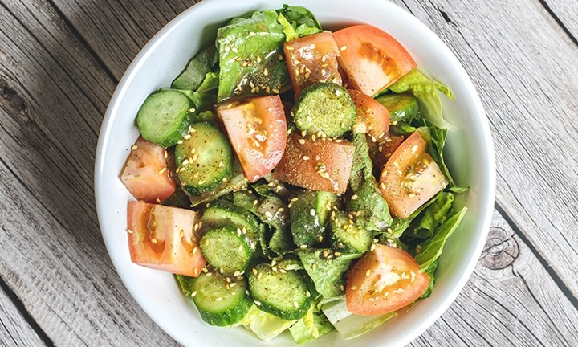

House Salad

Description
This is a simple salad, courtesy of Barbonzai Lebanese Eatery.
A refreshing salad with simple ingredients like cucumbers, tomatoes and romaine lettuce
The dressing is a lemon olive oil dressing and is very popular!
Ingredients needed:
- Extra virgin olive oil
- Fresh lemon juice
- Romaine lettuce
- Persian cucumbers
- Roma tomatoes
- More secret spices
Instructions:
- Mix olive oil and lemon juice in a small bowl at a 3:2 ratio
- Add the secret spices
- Chop the lettuce
- Dice tomatoes and cucumbers
- Add together in a large mixing bowl and add dressing to taste!